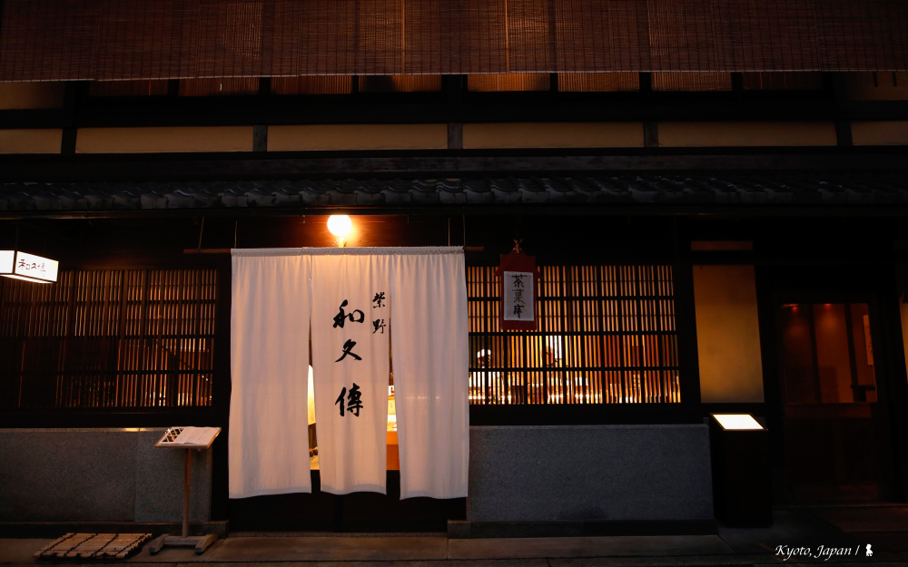

室町和久傳，品味京都千年的華麗舌尖體驗
_設計 x 生活美學 2020/1 _圖文 陳耀恩 Ean Chen 「在京都去一間好的旅館，即可見千年職人精神的濃縮！」一位非常熱愛與熟悉京都的家族長姊如此告訴我。我想、我完全可以想像，特別是當我去完一家始於 1870 年的京都高級餐廳後，一頓餐帶給我的感動與文化探索，不亞於住上一晚好旅館。
位於中京區堺町的「室町和久傳」，是京都知名的高級料亭之一，料理以京都產的當季食材為主，使用古法烹調方式來表現食物原味，就像韓良露在《露水京都》一書中提到「世上沒有比京都更重視時令、風土、自慢的精神」，跟著節氣過生活，不同季節來都能嚐到優異廚藝下的旬食，多好！不光食材好，這裡的廚師都是一流。不少從「室町和久傳」離開的廚師後來都開了同樣很受歡迎的餐廳，我笑說這裡真可謂是大廚催生所。
從我入住的「京都御池麩屋町 Resol Trinity 飯店」散步過去只要 5 分鐘，走在深秋陽光灑落的京都街道很舒服，跟著 Google Map 的指示轉進巷弄，我訝異於如此有名的餐廳竟是藏身在這尋常小巷，那是間優雅的町家老房，集合了販賣部及位於二樓的「茶菓席」，餐廳要從右邊相對低調的門進去，用餐區依照町家格局切分幾區座落一、二樓，若想私密些可訂包廂，不過我推薦可享中庭園景的料理吧台。除了景觀好，重點是能近距離觀看廚師們在面前料理。坐我左前方的一家三口點了時間限定的螃蟹大餐，廚師把燒得通紅的高級木炭放在火盆，搬到客人面前直接炭烤蟹腳，我們其他人也順便分享了撲鼻而來的香氣，我微笑著閉上眼睛，享受這五感的幸福。
席位有限加上高知名度，來這用餐事前訂位是一定要，這日約可容納 15 位的吧台區是完全客滿。客人們看起來都不凡，打扮入時也好氣質。坐我右邊的客人是位看起來奔六的大叔，頗有涵養，大概是看我拍攝認真引發好奇而找我攀談，他聊到這兩年來過台灣兩次、台北與高雄，知道我在世界各地拍攝與寫旅遊後，還跟我分享他美好的台灣美食經驗，例如在高雄吃到難忘的客家菜。席間，有些廚師介紹餐點時因英文不大熟悉、乾脆講起日文，我順勢不懂裝懂的直點頭以免尷尬。事後旁邊大哥偶爾會英文幫我講解剛剛廚師的說菜，感覺溫馨。他跟夫人離開時還特別與我道別、祝福旅途愉快，真是一場舒服的認識。
我好享受看京都料理職人的專注模樣，那種對食物的敬慎，讓我好感動。不愧是高級料亭，大廚在客人面前碳烤海鮮時，其他廚師會主動把面庭園的窗門拉開通風，這 5-6 位的廚師團隊，相當專業。而許多上菜儀式也十分講究，這套餐的最後是混著有蝦有南瓜的秋日炊飯，廚師在面前盛好飯後，把碗放在一只美麗的漆盤遞給客人，我隔壁的大叔接過後，也恭敬回禮，我看著忍不住想，這種儀式感是要從多深厚的富庶文化長期發展而來，不愧是千年古都，一頓飯讓我欣賞到京都的文化底蘊。
料理很美味倒是不意外，從青竹裡倒出的生酒開始，一連串驚嘆沒停過。蟹肉壽司細緻高雅，烤魚可謂極品，特別是魚皮烤的焦脆香足見功力，還有一品，吃之前其實我不知道是什麼，一咬下去，滋味濃郁，當我終於想起、可訝異了，那是香煎鵝肝。老實說鵝肝有股腥味總讓我抗拒，但這回吃到可能料理手法高明，加上搭配帶點莓果酸甜的調味汁，中和的真好，讓我重新認識鵝肝料理。
不光是食物本身，同樣講究當然還包括選用的器皿，除以顏色與花樣來襯托食物本身，也具巧思的呼應季節，例如裝盛蔬菜天婦羅的陶燒是片紅葉，而一只青花調羹上頭的圖案是秋日肥美的螃蟹，我笑著搖搖頭感到衷心佩服，不過還沒完。為我煮的那鍋炊飯，儘管我吃了兩碗還剩下不少，於是廚師幫我外帶，交上時我傻眼，居然是用像粽葉來包成如古時候的飯糰模樣，後來這成了我當天晚餐，打開時，還貼心多放了一顆用葉子包的梅子，那份體貼讓我直呼感動！
若有機會造訪京都，想感受細緻入微的季節之味，推薦來這感受一場低調華麗的京都美食之旅！
對了，位於這間町屋二樓的「茶菓席」也很值得ㄧ訪，不論是氛圍或甘味。原本店家幫我安排的是角落預約座位，隔壁坐著幾位女士暢聊正歡，我不想打擾也不想被打擾，起身四處走了一下，跟服務人員說我要面對庭園的一張單桌，我在那打開電腦寫稿，享受兩個多小時，京都早歇秋陽的光影變化。這的咖啡很不錯，搭配我點的紅豆口味蕨餅，令人滿足！
《室町和久傳 相關資訊》
官網：https://www.wakuden.jp/ryotei/muromachi/
地址：京都市中京区堺町通り御池下ル東側
營業時間與價格：
• 午餐 11:30 - 15:00［最晚入店時間 13:30］11,000円
• 晚餐 17:30 - 22:00［最晚入店時間 20:00］22,000円／27,500円
「吃」是人類與生俱來的本能，但從本能要進化成五感的享受，我覺得需要廚師與用餐者彼此都對食材與技術抱持著「尊敬」的心態去製作、去感受。這樣一場沒有透過言語的精彩交流，可說是日本職人文化的完美呈現。
職人文化一直是台灣設計產業比較缺乏的精神，這裡所謂的職人文化，並非光有個性、堅持己見的設計師就是職人，而是願意放下專業的傲慢，重視受眾接收後的反饋，並將其實際的內化，成為下次演出的養分。
伯納文化蘊藏的「同理心」，便是希望身為伯納設計的一員，都能夠除了專研自身的專業度外，同時保有同理心，站在業主的角度思考問題，解決問題，才能創造出與時俱進的作品，而非只是自己一廂情願的好設計啊！